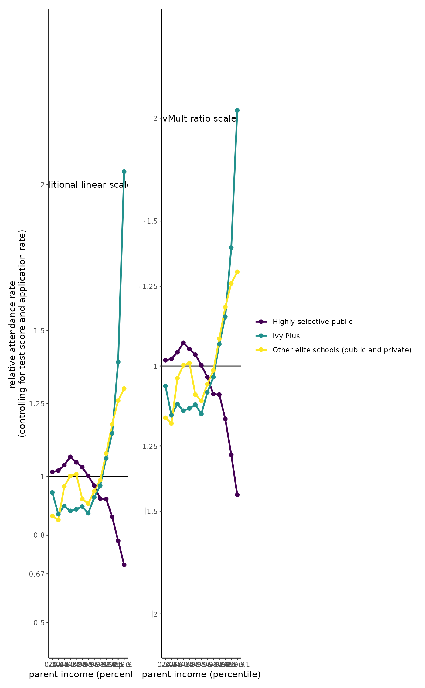
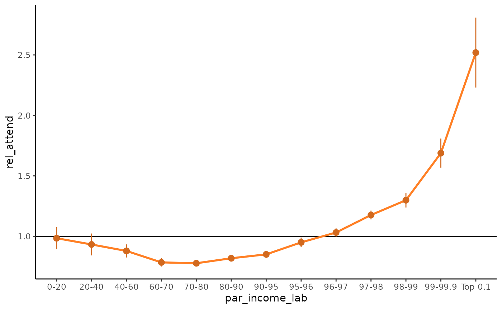

gallery
gallery.Rmd
library(ratioScales)
#> Loading required package: ggplot2
library(dplyr)
#>
#> Attaching package: 'dplyr'
#> The following objects are masked from 'package:stats':
#>
#> filter, lag
#> The following objects are masked from 'package:base':
#>
#> intersect, setdiff, setequal, union
library(ggplot2)Gallery
This vignette illustrates the use of ratioScales in data visualizations on topics ranging from exchange rates and college admissions to
Wealth and college admissions
In July 2023, Chetty et al. published a study that showed, among other things, that after controlling for SAT scores, wealthy students had much higher attendance rates at the most elite US colleges. Their data were visualized by Bhatia et al. in the New York Times, and later developed into an interactive toolkit that used the kinds of “divmult” labels we use in ratioScales, but they plotted proportional differences linearly as in the original manuscript. Here, we re-create some of their images, side by side, with and without ratio scales.
admit %>%
filter(tier == "Ivy Plus", par_income_lab != "Top 1") %>%
ggplot(aes(par_income_lab
, y = rel_att_cond_app
# , y = rel_attend
# , y = rel_attend_sat
, group = 1 )) +
geom_hline(yintercept = 1) +
stat_summary(fun = "mean"
, geom = "line", size = 1, color = "chocolate1") +
stat_summary( fun.data = "mean_se"
, geom = "pointrange", fatten = 4, color = "chocolate") +
labs(x = "parent income (percentile)"
, y = "relative attendance rate, given application") +
# stat_summary(aes(y = rel_apply), geom = "line") +
# stat_summary(aes(y = rel_apply), geom = "pointrange") +
# scale_y_ratio(tickVal = "divMult", slashStar = FALSE, n = 12) +
theme_classic()
#> Warning: Using `size` aesthetic for lines was deprecated in ggplot2 3.4.0.
#> ℹ Please use `linewidth` instead.
#> This warning is displayed once every 8 hours.
#> Call `lifecycle::last_lifecycle_warnings()` to see where this warning was
#> generated.
admit %>%
filter(tier == "Ivy Plus", par_income_lab != "Top 1") %>%
ggplot(aes(par_income_lab, rel_attend, group = 1 )) +
geom_hline(yintercept = 1) +
stat_summary(geom = "line", size = 1, color = "chocolate1") +
stat_summary(geom = "pointrange", fatten = 4, color = "chocolate") +
# scale_x_sqrt() +
# scale_x_log10() +
theme_classic()
#> No summary function supplied, defaulting to `mean_se()`
#> No summary function supplied, defaulting to `mean_se()`
admit %>%
filter(tier == "Ivy Plus", par_income_lab != "Top 1") %>%
ggplot(aes(par_income_lab, rel_attend, group = 1 )) +
geom_hline(yintercept = 1) +
stat_summary(geom = "line", size = 1, color = "chocolate1") +
stat_summary(geom = "pointrange", fatten = 4, color = "chocolate") +
# scale_x_sqrt() +
# scale_x_log10() +
theme_classic()
#> No summary function supplied, defaulting to `mean_se()`
#> No summary function supplied, defaulting to `mean_se()`